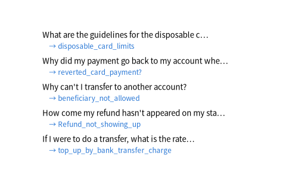

PolyAI (Casanueva et al., 2020), 온라인 은행 고객 문의 13,083개를 의도 77가지로 나눈 영어 데이터 (GitHub PolyAI-LDN/task-specific-datasets)

| text | category |
|---|---|
| I want to know why my top-up was reverted | top_up_reverted |
| What is the refund procedure? | request_refund |
| need to exchange currencies | exchange_via_app |
| How do I know where I can use my card? | card_acceptance |
| Is it possible to get a Visa and Mastercard from you? | visa_or_mastercard |
| It looks like I was charged twice for a single transaction | transaction_charged_twice |
| 열 | 종류 | 빈칸 | 고유값 수 | 범위 · 대표값 |
|---|---|---|---|---|
| text | 글자 · 범주 | 0 | 10,003 | 가장 흔한 값: I am still waiting on my card? (0.0%) |
| category | 글자 · 범주 | 0 | 77 | 가장 흔한 값: card_payment_fee_charged (1.9%) |
77가지, 가장 많은 것과 적은 것이 약 5배 차이
| ① 한 행 | 고객 문의 한 문장 |
| ② 입력 X | 문장 |
| ③ 출력 y | 의도 77가지 중 하나 (보낼 팀) |
| ④ 평가지표 | 정확도 + 의도별 정확도 |
| ⑤ 기준선 | 가장 흔한 의도로 보내기 |
문제를 정할 때 처음 채워 보는 칸들입니다. 여기서 끝이 아니라, 시험 데이터를 어떻게 나눌지 · 틀렸을 때 손해가 얼마인지 · 예측 시점에 정말 알 수 있는 값인지 같은 칸을 더 붙일수록 좋은 문제가 됩니다.
baseline (always 'card_payment_fee_charged'): accuracy 1.3% TF-IDF + logistic regression : accuracy 85.5%
누가, 왜, 어떻게 만든 데이터인지 직접 확인해 보세요.
인턴 · 산학협력 · 프로젝트 주제를 고를 때 참고하세요 (일반적인 예시).